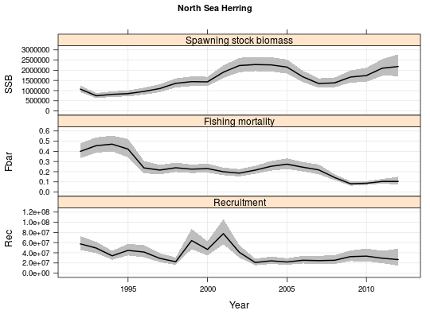
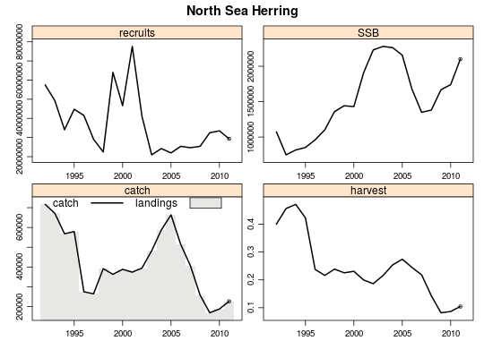

A set of FLR objects used to perform the 2012 North Sea Autumn Spawning Herring Stock Assessment
data(NSH) data(NSH.sam) data(HERAS.sams)
The data is split into three separate groups. The first of these, returned by data(NSH) contains objects relating to the North Sea herring stock
FLStock object for the North Sea herring stock, containing data relating to the stock e.g. catch numbers at age
FLIndices object containing the results of surveys on the North Sea herring stock. The four surveys are
In addition the results of an assessment of this stock performed using FLSAM, and the associated configuration file, are returned by data(NSH.sam)
FLSAM object containg the results of the assessment
FLSAM.control object containg the configuration used to perform the assessment
The third group is an example of an FLSAMs object and is called HERAS.sams. It contains four FLSAM objects resulting from various parameter configurations for the HERAS survey, grouping various age groups together. The four objects correspond to all age groups having independent catchability parameters ("all-free"), catchability parameters for ages 1-2, 3-4, and 5-8 ("three.lvls"), for ages 1-3, and 4-8 ("two.lvls") and one catchability parameter for all ages ("one.lvl").
Note that these are not the full North Sea herring assessment objects, but rather have been truncated to remove the data prior to 1992, so as to allow the model to converge quickly. The full assessment can be found in the Herring Working Group repository, "http://hawg.googlecode.com".
ICES. 2012. Report of the Herring Assessment Working Group for the Area South of 62 N (HAWG), 13 - 22 March 2012, Copenhagen, Denmark. ICES CM 2012/ACOM:06. 835 pp.
#Load data data(NSH) data(NSH.sam) #Stock summary plot plot(NSH.sam)#Update NSH FLStock object NSH <- NSH + NSH.sam plot(NSH)#Example of FLSAMs object data(HERAS.sams) #Likelihood ratio test to choose best combination lr.test(HERAS.sams)#> statistics #> models Comparison Neg. log likel # Parameters Likel difference #> 1 Final Assessment 1 vs. 2 196.308 26 2.09 #> 2 Final Assessment 2 2 vs. 3 198.396 22 0.68 #> 3 Final Assessment 3 3 vs. 4 199.076 21 3.29 #> 4 Final Assessment 4 202.364 20 #> statistics #> models Degrees of freedom P value #> 1 Final Assessment 4 0.3827 #> 2 Final Assessment 2 1 0.2435 #> 3 Final Assessment 3 1 0.0103 #> 4 Final Assessment 4